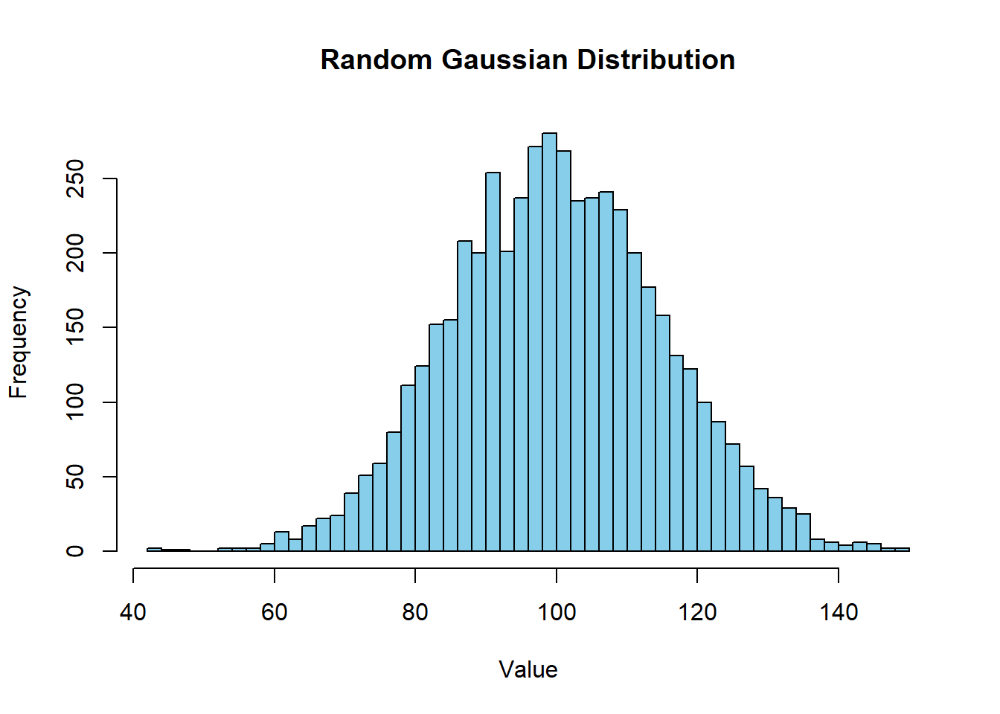
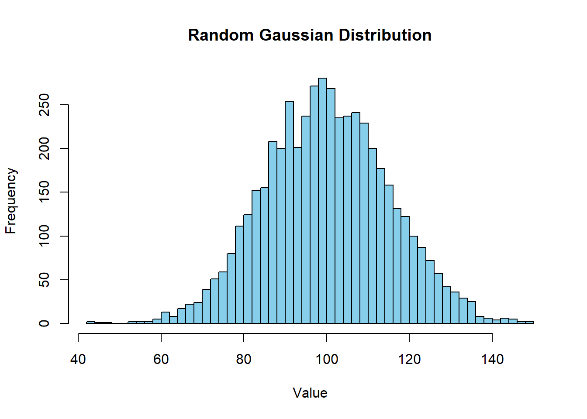
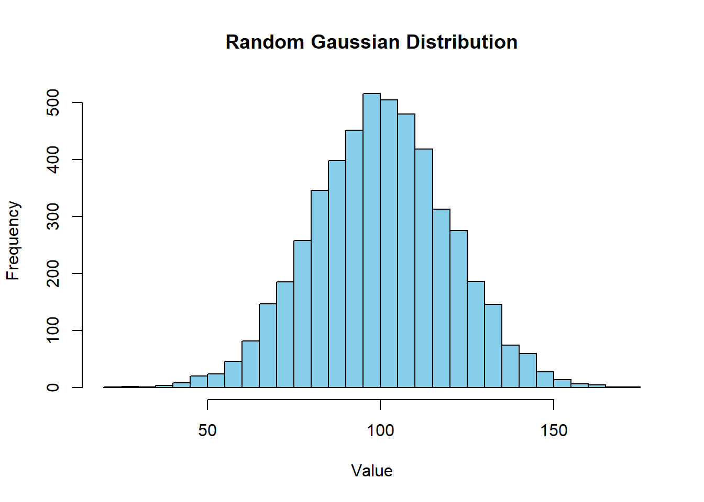
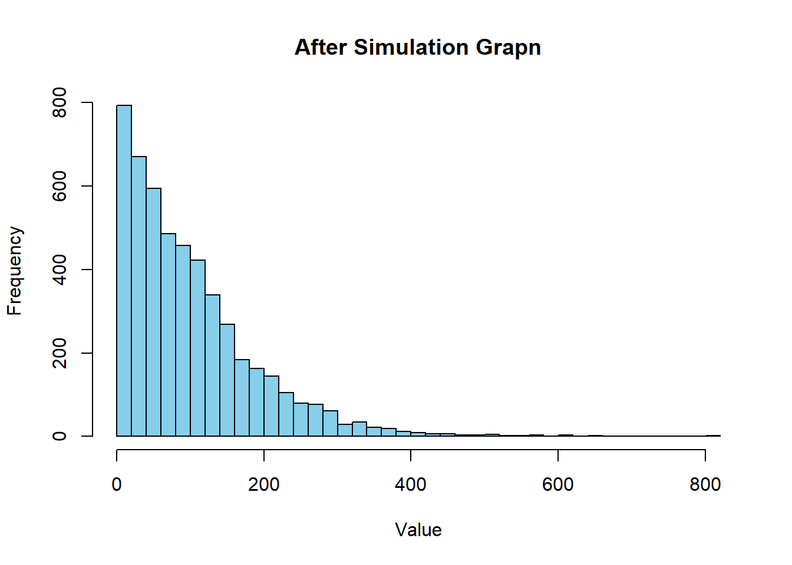

Code

This is my try to replicate the simulation according to the assignment of replicating this simulation found here.
Since the import random code didnt work out, Ill rewrite the code with the rnorm code, that should give us the same curve. Also creating a histogram for us to see.

Now we are computing the gini coefficient. (chatgpt assisted)
Now, lets put my population into the gini coefficient.
gini(population)[1] 0.0847681Here is me running my simulation multiple times to see if this was a fluke:
[1] 0.08331847gini(population2)[1] 0.08309262gini(population3)[1] 0.08386314gini(population4)[1] 0.08499821gini(population5)[1] 0.08513986We see that its always around 0.084. Which is a bit weird since in the simulation of the document Im reading puts the gini coeff at 0.11. Since the error is pretty consistent, I suspect an error in my code. I read through the parameters of the gaussian distribution and saw that the put a small formula into the std_dev part: MU/5. Which is std_dev = 20 but I used std_dev = 15.
Lets change that and see whats up

The histogram already looks a bit flatter, which should imply a higher gini coefficient as its more unequal.
gini(population)[1] 0.1117662Perfect. Now lets test again if its a fluke.
[1] 0.1118576gini(population2)[1] 0.1132838gini(population3)[1] 0.1122562gini(population4)[1] 0.1120957gini(population5)[1] 0.1121591Now in the end, Ill do the histogram prettier.

This suffices.
Now Ill write the function of the money splitting. To be honest, I have never written a function myself but I can use the gini function as a blueprint.
Lets run this bad boy
random_split(30,70)[1] 67.14333 32.85667Okay so I dont like how it splits the money into so many small parts. This doesnt make sense as we in real life dont do that either. If we want bigger numbers, Ill just up the amount of money people trade with. Else why did we put the number on 100 if we are taking in numbers in the millions??? Exactly.
[1] 15 85better.
Now, like in the guide, lets see if we can pick two random citiziens of our population.
anyone <- function(x){
sample(0:N, 2)
}
anyone(N) [1] 661 3002Now lets officially start with simulating whueee :)))
"simulate <- function(N, repetitions){
history <- list()
#so that the first entry is the population we started with
history[[1]] <- N
for (t in 1:repetitions){
selected_people <- anyone(N)
#getting the people for trading
person1 <- selected_people[1]
person2 <- selected_people[2]
#getting them the amount what they traded
new_wealth <- random_split(person1, person2)
#Updating their money
N[N == person1] <- new_wealth[1]
N[N == person2] <- new_wealth[2]
#Record the current state of the population
history[[t+1]] <- population
}
return(history)
}
repetitions <-1
simulate(population, repetitions)"[1] "simulate <- function(N, repetitions){\n history <- list()\n #so that the first entry is the population we started with\n history[[1]] <- N\n \n for (t in 1:repetitions){\n selected_people <- anyone(N)\n #getting the people for trading\n person1 <- selected_people[1]\n person2 <- selected_people[2]\n #getting them the amount what they traded\n new_wealth <- random_split(person1, person2)\n #Updating their money\n N[N == person1] <- new_wealth[1]\n N[N == person2] <- new_wealth[2]\n #Record the current state of the population\n history[[t+1]] <- population\n }\n \n return(history)\n}\n\nrepetitions <-1\n\nsimulate(population, repetitions)"This next code block is to test some small parts of the code above and see where the problem is.
selected_people <- anyone(round_population)
#getting the people for trading
person1 <- selected_people[1]
person2 <- selected_people[2]
person1[1] 3337person2[1] 307random_split(person1, person2)[1] 1790 1854I have run into several problems and started solving them in the editor. I think its better if I describe some procesess I have been doing though. So I still get decimals in the gaussian distribution, which I dont want. So Ill change that.

Again, some shenanigangs.
person1[1] 3337person2[1] 307selected_people <- anyone(round_population)
#getting the people for trading
person1 <- selected_people[1]
person2 <- selected_people[2]
person1[1] 3529person2[1] 598 #getting them the amount what they traded
new_wealth <- random_split(person1, person2)
#Updating their money
round_population[round_population == person1] <- new_wealth[1]
round_population[round_population == person2] <- new_wealth[2]
person1[1] 3529person2[1] 598 #Record the current state of the population
#history[[t+1]] <- round_population
#}
#simulate(round_population, repetitions)all in one thing:
N <- 5000 # Population.
MU <- 100 # Mean of the Population
std_dev <- MU/5 # Standard deviation
population <- rnorm(N, mean = MU, sd = std_dev)
round_population <- round(population)
anyone <- function(round_population){
sample(1:length(round_population), 2)
}
random_split <- function(x,y) {
# Sum them up
pot <- x+y
#how to share
part1 <- sample(0:pot, 1)
#calcutlating the split
part2 <- pot - part1
# Return the Gini coefficient
return(c(part1, part2))
}
simulation <- function(round_population,repetitions) {
for (i in 1:repetitions) {
selected_people <- anyone(round_population)
#getting the people for trading
person1 <- round_population[selected_people[1]]
person2 <- round_population[selected_people[2]]
#making the new wealth distribution between those two
new_wealth <- random_split(person1, person2)
#overwriting the old bank statement with the new one
round_population[selected_people[1]] <- new_wealth[1]
round_population[selected_people[2]] <- new_wealth[2]
}
return(round_population)
}
repetitions <- 10000
final_population <- simulation(round_population, repetitions)
hist(final_population, breaks = 50, main = "After Simulation Grapn", xlab = "Value", col = "skyblue")
This IS CORRECT I WANT TO SCREAM OH MY GOD I CHANGED SO MUCH AND NOW I GET IT YAAAs.
I also noticed that only starting at like 10’000 simulations we get this distribution, before that we dont. (Maybe Ill implement this in this website we will see)
Back to top